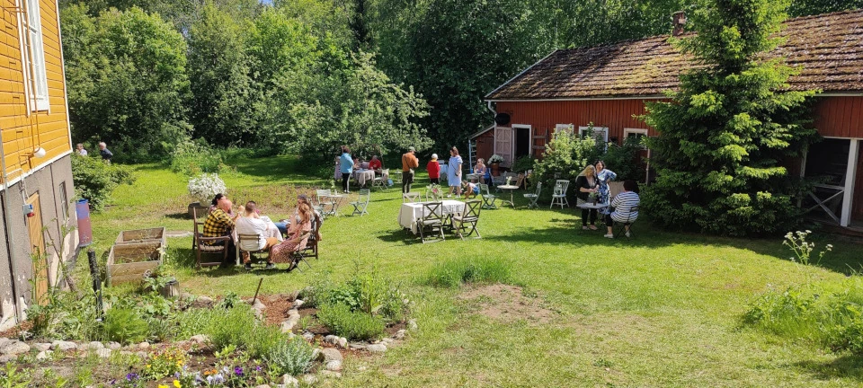
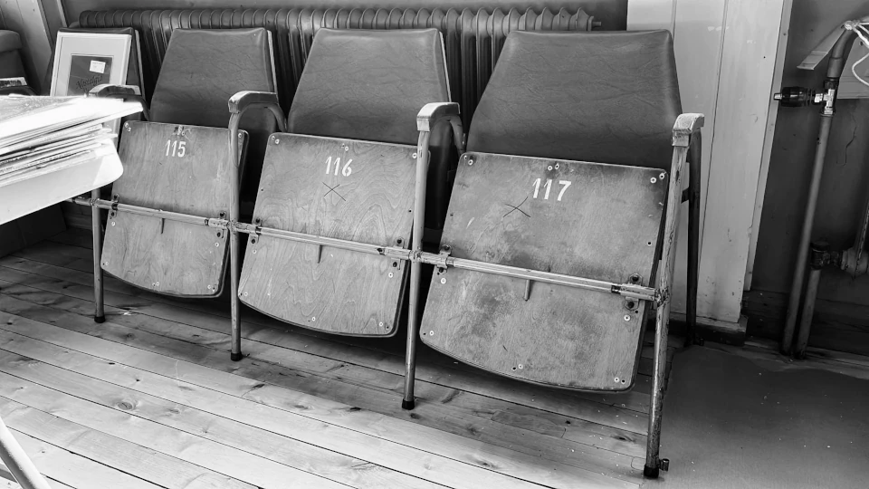

Muut projektit

Kesän makuja ja rentoutumista - Kesäkahvila pihapiirissä
Tervetuloa viettämään kesää ainutlaatuisessa ympäristössä, kun loimme tunnelmallisen kesäkahvilan kauniiseen pihapiiriin. Tarjoamme sinulle mahdollisuuden nauttia herkullisista mauista ja rentoutua idyllisessä ympäristössä. Olemme kiinnittäneet erityistä huomiota yksityiskohtiin ja luoneet ainutlaatuisen kokemuksen kaikille aisteille.
Tarkista aukioloajat Instagramista tai kahvilan sivuilta!
Lisätietoja ☕

Leffateatterin rakentaminen vanhaan navettaan
Tuolit löydetty! Vielä puuttuu valkokangas.

Luonnon runsauden keskellä - Kasvit ja yrtit
Kuistilla esikasvatuksessa mm. tomaatteja, kurkku, herneitä, auringonkukka, yrttejä, sitruuna, kesäkukkia, yms.